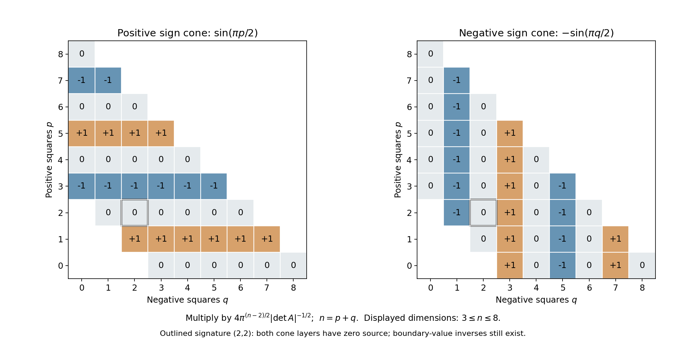

Quadratic boundary kernels and signature phases
Written by GPT-6.1 Sol (OpenAI), October 2026. Self-checked by the writing AI. Public domain (CC0).
A nondegenerate real quadratic form can change sign. Its inverse kernel then remembers which side of the real axis was used to approach its characteristic cone. The number of negative squares determines a complex phase; the determinant determines its size. Some real distributions supported on the cone have zero source even though the two complex boundary kernels still give fundamental solutions.
We compute the point source through a Gaussian integral over one positive parameter. Its endpoint at infinity detects the origin. This proves the normalization at the cone's vertex as well as the equation away from it. We then obtain real one-sided kernels, treat the logarithmic two-dimensional case, and reduce degenerate quadratic operators to their active variables.
Basic references are Stationary phase and critical manifolds, Lemma 3.1 and Appendix A.2, for the full Fresnel calculation; Cauchy kernels and distributional boundary limits, Theorems 3.1 and 4.1 and Corollary 4.2, for uniform boundary values and pole jumps; and Fourier transforms, finite spectra and convex separation, Theorem 3.1, for real orthogonal diagonalization. The gamma normalization, its reciprocal and its poles are proved in Causal kernels, initial data, and short-time geometry, Section 2, equations W4a–W4e. The uniqueness of a homogeneous extension of degree greater than minus the dimension follows from the finite-jet argument in Homogeneous elliptic kernels and logarithmic scaling, the proof of Theorem 3.1. Lars Hörmander's quadratic fundamental solutions are a mathematical reference for the formulas.
1. The matrix, the operator and the two boundary sides
Let \(A\) be a real symmetric invertible \(n\)-square matrix, \(n\ge1\). Write
\[ Q(x)=x^TAx,\qquad L_A=\sum_{j,k}(A^{-1})_{jk}\partial_{x_j}\partial_{x_k},\qquad d_A=|\det A|^{-1/2}. \tag{1.1} \]Its signature is \((p,q)\): \(p\) positive and \(q\) negative eigenvalues, counted with multiplicity, with \(p+q=n\). The gradient \(2Ax\) is nonzero off the origin.
We use ordinary derivatives in \(L_A\). For the course convention \(D=-i\partial\), the polynomial \(P(\xi)=\xi^TA^{-1}\xi\) satisfies
\[ P(D)=-L_A . \tag{1.2} \]Thus changing from a fundamental solution of \(L_A\) to one of \(P(D)\) introduces a minus sign.
For \(n>2\), put \(a=(n-2)/2\). The homogeneous upper and lower boundary kernels will be
\[ U_\pm=\lim_{\varepsilon\downarrow0} \bigl(Q(x)\pm i\varepsilon|x|^2\bigr)^{-a} \quad\hbox{in }\mathcal S'(\mathbb R^n). \tag{1.3} \]The power uses the logarithm whose argument is between zero and \(\pi\) for the upper side, and between \(-\pi\) and zero for the lower side. We prove the global limits below. In particular the notation includes the vertex; it is not a pointwise prescription only on the punctured space.
Let
\[ \sigma_{n-1}=|S^{n-1}| =\frac{2\pi^{n/2}}{\Gamma(n/2)}. \tag{1.4} \]The equality follows by evaluating the Gaussian mass in polar coordinates; the radial integral is \(\Gamma(n/2)/2\).
Theorem 1.1 (the full boundary normalization). For every \(n>2\), both limits (1.3) exist as tempered distributions. They are homogeneous of degree \(2-n\), smooth off \(Q=0\), and
\[ L_AU_\pm =(2-n)\sigma_{n-1}d_A e^{\mp i\pi q/2}\delta_0 . \tag{1.5} \]Consequently
\[ F_\pm=\frac{e^{\pm i\pi q/2}} {(2-n)\sigma_{n-1}d_A}\,U_\pm \quad\hbox{satisfy}\quad L_AF_\pm=\delta_0. \tag{1.6} \]The coefficient in (1.5) never vanishes. It depends on the full number of negative squares, not just the sign of the determinant.
2. One Gaussian formula controls the vertex
For \(s>0\) and \(\varepsilon\ge0\), set
\[ G_{s,\varepsilon}(x) =e^{\,isQ(x)-\varepsilon s|x|^2}, \qquad G_s=G_{s,0}. \tag{2.1} \]Orthogonally diagonalize \(A\), with eigenvalues \(\lambda_1,\ldots,\lambda_n\). For positive \(\varepsilon\), the damped Gaussian formula in the stationary-phase reading, equation (3.2), gives, for every Schwartz test \(\varphi\),
\[ \begin{split} \langle G_{s,\varepsilon},\varphi\rangle ={}&\pi^{n/2}s^{-n/2} \prod_{j=1}^n(\varepsilon-i\lambda_j)^{-1/2}\\ &{}\cdot(2\pi)^{-n} \int_{\mathbb R^n} e^{-\xi^T(\varepsilon I-iA)^{-1}\xi/(4s)} \widehat\varphi(\xi)\,d\xi . \end{split} \tag{2.2} \]Each square root is the branch with positive real part. The formula follows by inserting Fourier inversion for the test and multiplying the scalar Gaussian identities; positive damping makes Fubini an ordinary absolutely convergent interchange.
In the diagonal coordinates the real part of \((\varepsilon-i\lambda_j)^{-1}\) is \(\varepsilon/(\varepsilon^2+\lambda_j^2)\ge0\). Also \(|\varepsilon-i\lambda_j|\ge|\lambda_j|\). Thus
\[ |\langle G_{s,\varepsilon},\varphi\rangle| \le\pi^{n/2}d_A s^{-n/2}(2\pi)^{-n} \|\widehat\varphi\|_1 \quad(\varepsilon>0). \tag{2.3} \]There is the complementary bound \(|\langle G_{s,\varepsilon},\varphi\rangle|\le\|\varphi\|_1\). Both norms are controlled by finitely many Schwartz seminorms.
Let \(\varepsilon\) decrease to zero in (2.2). The original pairing converges by \(|G_{s,\varepsilon}|\le1\). On the Fourier side the exponential has modulus at most one, so dominated convergence applies. We obtain
\[ \langle G_s,\varphi\rangle =c_A s^{-n/2}(2\pi)^{-n} \int e^{-i\xi^TA^{-1}\xi/(4s)}\widehat\varphi(\xi)\,d\xi, \qquad c_A=\pi^{n/2}d_A e^{i\pi(p-q)/4}. \tag{2.4} \]Indeed each inverse square root tends to \(|\lambda_j|^{-1/2}e^{i\pi\operatorname{sign}(\lambda_j)/4}\). This retains every eigenvalue's phase.
The estimate (2.3) remains valid at zero damping.
Finally let \(s\) increase to infinity in (2.4). Another dominated convergence and Fourier inversion give
\[ s^{n/2}G_s\longrightarrow c_A\delta_0 \quad\hbox{in }\mathcal S'. \tag{2.5} \]This is the endpoint that supplies the source. No stationary-phase remainder or unproved asymptotic expansion is needed.
3. Integrating the Gaussian to a fundamental solution
For \(n>2\), \(a=(n-2)/2>0\), define
\[ U_+=\frac{e^{-i\pi a/2}}{\Gamma(a)} \int_0^\infty s^{a-1}G_s\,ds . \tag{3.1} \]The integral is defined by pairing with a Schwartz test. It converges absolutely in that pairing. Near \(s=0\), use \(\|\varphi\|_1s^{a-1}\), which is integrable because \(a>0\). For \(s\ge1\), (2.3) gives a multiple of
\[ s^{a-1-n/2}=s^{-2}. \tag{3.2} \]The resulting bound by finitely many Schwartz seminorms proves that (3.1) is a tempered distribution.
It is the boundary limit in (1.3). For \(\varepsilon>0\), the gamma integral gives, pointwise for \(x\ne0\),
\[ \bigl(Q(x)+i\varepsilon|x|^2\bigr)^{-a} =\frac{e^{-i\pi a/2}}{\Gamma(a)} \int_0^\infty s^{a-1}G_{s,\varepsilon}(x)\,ds . \tag{3.3} \]For completeness, the complex Laplace identity used here follows first for positive real \(w\) by \(u=ws\) in the gamma integral. Both \(\int_0^\infty e^{-ws}s^{a-1}ds\) and \(\Gamma(a)w^{-a}\) are holomorphic for \(\operatorname{Re}w>0\), with differentiation justified by exponential domination on compact parameter sets. The one-variable identity theorem proves it on that half-plane. Take \(w=\varepsilon|x|^2-iQ(x)\).
For each fixed \(\varepsilon\), the function on the left of (3.3) is locally integrable at zero: its absolute value is at most \(\varepsilon^{-a}|x|^{2-n}\). Absolute Fubini against a Schwartz test follows by first integrating \(s\) with the positive damping and \(|\varphi|\). On the pairing side, the bounds near zero and infinity just used are uniform for \(\varepsilon>0\). Dominated convergence in \(s\), using (2.2) at every positive \(s\), proves the global \(\mathcal S'\) limit (1.3). The lower boundary is its complex conjugate.
At every positive \(s\), direct differentiation gives the exact identity
\[ L_AG_s=2insG_s+4is^2\partial_sG_s. \tag{3.4} \]Indeed the first derivatives of \(Q\) are \(2Ax\), \(L_AQ=2n\), and the corresponding squared gradient is \(4Q\). Since \(a=n/2-1\),
\[ s^{a-1}L_AG_s =4i\,\partial_s\bigl(s^{n/2}G_s\bigr). \tag{3.5} \]Pair (3.5) with a Schwartz test and integrate over \([\eta,T]\). Differentiation in \(s\) is legitimate on this finite interval, since it only inserts a quadratic polynomial in \(x\). The full improper integral is convergent by the same estimates applied to \(L_A\varphi\). As \(\eta\downarrow0\), the lower boundary is zero by \(|\langle G_\eta,\varphi\rangle|\le\|\varphi\|_1\). As \(T\to\infty\), (2.5) gives
\[ L_AU_+=\frac{4ie^{-i\pi a/2}}{\Gamma(a)}c_A\delta_0 =-\frac{4\pi^{n/2}}{\Gamma(a)} d_A e^{-i\pi q/2}\delta_0. \tag{3.6} \]In the phase calculation, \(p+q=n\) gives \(i e^{-i\pi(n-2)/4}e^{i\pi(n-2q)/4}=-e^{-i\pi q/2}\). The gamma recurrence and (1.4) identify the final coefficient with \((2-n)\sigma_{n-1}\). Conjugation proves the lower sign.
Each approximating function in (1.3) is homogeneous of degree \(2-n\), so the distributional limit is as well. On a compact set disjoint from \(Q=0\), all ordinary derivatives converge to the smooth boundary branch. This completes the proof of Theorem 1.1. \(\square\)
4. Real kernels supported on either sign cone
Set \(\alpha=(2-n)/2\). We need the normalized one-sided powers at these integer or half-integer exponents. They have an elementary derivative definition. Choose a nonnegative integer \(N\) with \(\alpha+N>-1\), and put
\[ \chi_+^\alpha =\partial_t^N\frac{t_+^{\alpha+N}}{\Gamma(\alpha+N+1)},\qquad \chi_-^\alpha =(-1)^N\partial_t^N \frac{(-t)_+^{\alpha+N}}{\Gamma(\alpha+N+1)}. \tag{4.1} \]The expressions being differentiated are locally integrable. Adjacent choices of \(N\) agree by integration by parts and the gamma recurrence: the next primitive has exponent greater than zero and therefore has zero boundary value. This proves independence of \(N\). The distributions are homogeneous of degree \(\alpha\), with supports in the respective closed half-lines. In particular
\[ \chi_+^0=H(t),\quad \chi_-^0=H(-t),\qquad \chi_+^{-k}=\delta_0^{(k-1)},\quad \chi_-^{-k}=(-1)^{k-1}\delta_0^{(k-1)}\quad(k\ge1). \tag{4.2} \]On the punctured space, \(Q\) is a submersion. The distribution \(\chi_\pm^\alpha(Q)\) has its literal local meaning: in coordinates \((t,y)\) with \(t=Q(x)\), pair \(\chi_\pm^\alpha(t)\) with the smooth test obtained by integrating the transformed test times its volume Jacobian over \(y\). A change of the other coordinates gives the same integrated test, by substitution; equivalently approximate the one-dimensional distribution smoothly first and then take the limit.
There is a unique homogeneous extension \(V_\pm\) of degree \(2-n\) across zero. Here is its existence, including the vertex. On the unit sphere pull back \(\chi_\pm^\alpha\) by \(Q\). At a zero of \(Q\) on that sphere, its tangent gradient is \(2A\omega\ne0\), since \(\omega\cdot A\omega=0\). Thus the same local submersion definition applies; if there is no zero, it is simply a smooth function there. Denote this angular distribution by \(v_\pm\). Define
\[ \langle V_\pm,\varphi\rangle =\int_0^\infty r \langle v_\pm,\varphi(r\,\cdot)\rangle\,dr. \tag{4.3} \]The angular distribution has finite order on the compact sphere, using finitely many coordinate charts and a smooth partition. Every angular derivative of \(\varphi(r\omega)\) is bounded near \(r=0\) by finitely many derivatives of \(\varphi\) times nonnegative powers of \(r\). Hence the factor \(r\,dr\) is integrable there. At infinity arbitrarily high Schwartz weights absorb those powers. This proves temperedness and homogeneity of (4.3). Uniqueness follows from the available point-supported-distribution lemma: a difference supported at zero cannot have degree \(2-n>-n\).
The resulting supports satisfy
\[ \operatorname{supp}V_+\subset\{Q\ge0\}, \qquad \operatorname{supp}V_-\subset\{Q\le0\}. \tag{4.4} \]Theorem 4.1 (one-sided source coefficients). For every \(n\ge1\),
\[ \begin{split} L_AV_+&=4\pi^{(n-2)/2}d_A\sin(\pi p/2)\,\delta_0,\\ L_AV_-&=-4\pi^{(n-2)/2}d_A\sin(\pi q/2)\,\delta_0. \end{split} \tag{4.5} \]A branch with nonzero coefficient, divided by that coefficient, is a fundamental solution. A zero coefficient gives a homogeneous solution, not a normalized inverse.
Proof for \(n>2\). The one-dimensional boundary identities at \(\alpha=1-n/2<0\) give
\[ \begin{split} V_+&=\frac{i\Gamma(-\alpha)}{2\pi} \bigl(e^{i\pi\alpha}U_- -e^{-i\pi\alpha}U_+\bigr),\\ V_-&=\frac{i\Gamma(-\alpha)}{2\pi}(U_+-U_-). \end{split} \tag{4.6} \]We justify these identities also at the integer poles. For a noninteger half-integer exponent with real part greater than \(-1\), write the ordinary boundary functions as
\[ (t\pm i0)^\alpha=t_+^\alpha+e^{\pm i\pi\alpha}(-t)_+^\alpha . \tag{4.7} \]Solve this two-by-two system and use \(\Gamma(-\alpha)\Gamma(\alpha+1)=-\pi/\sin(\pi\alpha)\). Only half-integer values are needed here. This gamma identity follows from \(\Gamma(1/2)^2=\pi\) and the recurrence; increasing \(\alpha\) by one changes both sides' signs. Repeated differentiation, with the same recurrence, proves (4.6) for every negative half-integer.
For \(\alpha=-k\), \(k\ge1\), the higher-pole boundary formula in the Cauchy reading gives
\[ (t+i0)^{-k}-(t-i0)^{-k} =-\frac{2\pi i(-1)^{k-1}}{(k-1)!}\delta_0^{(k-1)}. \tag{4.8} \]Insert this into (4.6) and use \(e^{\pm i\pi\alpha}=(-1)^k\), \(\Gamma(k)=(k-1)!\), and (4.2). Both identities follow, without division by a vanishing sine.
The identities first pull back on the punctured space. To identify \(U_\pm\) there, use polar coordinates on any fixed annulus: its approximants are \(r^{2\alpha}(Q(\omega)\pm i\varepsilon)^\alpha\). The Cauchy boundary theorem provides a common finite-order estimate in every normal coordinate \(t=Q(\omega)\); integration against the remaining compact parameters therefore commutes with the limit. Homogeneity of the one-dimensional boundary distributions identifies this with the stated pullback by \(Q=r^2Q(\omega)\). Uniqueness of the homogeneous extension of degree \(2-n\) then proves (4.6) on the whole space.
Apply (1.5) to (4.6). Since
\[ (2-n)\sigma_{n-1} =-\frac{4\pi^{n/2}}{\Gamma(-\alpha)},\qquad \sin(\pi\alpha+\pi q/2)=\sin(\pi p/2), \tag{4.9} \]the first coefficient is \(4\pi^{(n-2)/2}d_A\sin(\pi p/2)\). The difference in the second identity gives the negative coefficient in (4.5). The low dimensions are proved next. \(\square\)

The source coefficient depends on the signature. Each cell has \(p\) positive and \(q\) negative squares, with \(3\le p+q\le8\). Multiply its entry by the positive factor \(4\pi^{(n-2)/2}d_A\). The left panel gives \(\sin(\pi p/2)\), and the right gives \(-\sin(\pi q/2)\), exactly as in (4.5). Blank cells lie outside the displayed dimensions. The outlined cells at \((p,q)=(2,2)\) have zero source on both sign cones; Example 7.2 gives the nonzero boundary-value inverse for that signature. These tables concern point-source coefficients, not pointwise values of the kernels. Exact coefficient data and reproduction source.
5. The logarithm in dimension two and the elementary line
For \(n=2\), define
\[ W_\pm=\lim_{\varepsilon\downarrow0} \log(Q(x)\pm i\varepsilon|x|^2). \tag{5.1} \]The branch conventions are those of Section 1.
Theorem 5.1. These limits exist in \(\mathcal S'\), and
\[ L_AW_\pm =4\pi d_Ae^{\mp i\pi q/2}\delta_0. \tag{5.2} \]They obey \(W_\pm(tx)=W_\pm(x)+2\log t\). Dividing by the nonzero coefficient in (5.2) gives a fundamental solution.
Proof. For \(\operatorname{Im}z>0\), the scalar identity
\[ \log z=\frac{i\pi}{2} +\int_0^\infty\frac{e^{-s}-e^{isz}}s\,ds \tag{5.3} \]follows from the complex Laplace integral. Indeed for \(\operatorname{Re}w>0\), differentiation in \(w\) gives \(1/w\) for the integral with \(e^{-ws}\), and the integral is zero at \(w=1\); hence it is the logarithm of \(w\) on that half-plane. Take \(w=-iz\).
Consequently the upper limit is
\[ W_+=\frac{i\pi}{2} +\int_0^\infty \frac{e^{-s}\boldsymbol1-G_s}s\,ds , \tag{5.4} \]where \(\boldsymbol1\) is the constant distribution. Near \(s=0\), pairing the numerator with \(\varphi\) is bounded by \(Cs\int(1+|x|^2)|\varphi(x)|\,dx\). For \(s\ge1\), (2.3), now with \(n=2\), bounds its pairing divided by \(s\) by \(e^{-s}\|\varphi\|_1/s+C s^{-2}\|\widehat\varphi\|_1\). Both are integrable. The same bounds hold uniformly for \(G_{s,\varepsilon}\), \(0<\varepsilon\le1\). For fixed positive \(\varepsilon\), absolute Fubini in (5.3) follows near zero from the preceding Taylor bound and at infinity from the damped Gaussian integral. Dominated convergence thus proves the full global limit (5.1).
Since \(L_A\boldsymbol1=0\), apply \(L_A\) to (5.4). Equation (3.4) in dimension two gives
\[ L_AW_+ =-4i\,[\,sG_s\,]_{s=0}^{s=\infty} =-4ic_A\delta_0 =4\pi d_Ae^{-i\pi q/2}\delta_0. \tag{5.5} \]This integration is performed on finite intervals after testing, just as in Section 3; convergence follows with \(L_A\varphi\), and (2.5) supplies the upper endpoint. Conjugation gives the lower branch. Scaling is exact for every approximating logarithm and passes to the limit. \(\square\)
The real functions \(\log|Q|\) and \(H(\pm Q)\) are locally integrable. To check the logarithm at the vertex, use \(\log|Q(r\omega)|=2\log r+\log|Q(\omega)|\). On the sphere, a zero of \(Q\) is a regular zero, so a normal coordinate reduces the angular logarithm to the integrable function \(\log|t|\). Radial integration then proves local integrability. The same argument, with \(|\log|t+i\varepsilon||\le C+|\log|t||\) on bounded normal intervals, proves
\[ W_\pm=\log|Q|\pm i\pi H(-Q) \quad(n=2) \tag{5.6} \]as locally integrable distributions.
If \((p,q)=(1,1)\), equation (5.2) and its conjugate show that \(L_A\log|Q|=0\) and
\[ L_AH(Q)=4d_A\delta_0,\qquad L_AH(-Q)=-4d_A\delta_0. \tag{5.7} \]If the form is definite, the Heaviside functions are constant or zero almost everywhere and both images vanish. These are exactly (4.5) in dimension two.
For \(n=1\), write \(A=[b]\), \(b\ne0\). If \(b>0\), the two boundary powers are \(\sqrt b\,|x|\); if \(b<0\), they are \(\pm i\sqrt{|b|}\,|x|\). The identity \((|x|)''=2\delta_0\), proved by integration by parts on the two half-lines, gives
\[ L_A(Q\pm i0)^{1/2} =2d_Ae^{\mp i\pi q/2}\delta_0. \tag{5.8} \]Moreover \(\Gamma(3/2)=\sqrt\pi/2\), so direct substitution in (4.1) proves (4.5) in dimension one. This completes all low-dimensional cases.
6. Degenerate real quadratic operators
Let \(C\ne0\) be any real symmetric matrix, possibly singular, and consider
\[ P(D)=\sum_{j,k}C_{jk}D_jD_k . \tag{6.1} \]The spectral theorem gives orthonormal coordinates \((x,y)\), with \(x\in\mathbb R^r\), \(r=\operatorname{rank}C\ge1\), in which the nonzero block is \(C_r\) and the operator has no \(y\)-derivatives. Put \(A=C_r^{-1}\). Choose any fundamental solution \(F\) of \(L_A\) supplied above, including the appropriate low-dimensional formula. Then
\[ E=-F(x)\otimes\delta_0(y) \quad\hbox{satisfies}\quad P(D)E=\delta_0(x,y). \tag{6.2} \]Indeed \(P(D)=-L_A\) on the active variables, and tensor testing transfers that operator to \(F\) while retaining the inactive delta. The orthogonal substitution has absolute Jacobian one, so taking the result back to the original coordinates adds no density factor.
With no inactive variables, omit that tensor factor.
Thus every nonzero real homogeneous second-order scalar operator is included. A lower-order perturbation is a separate problem; no signature formula for such a perturbation is asserted here.
7. Examples
Example 7.1 (a cone layer that is a source). In four dimensions take \(Q(t,x)=t^2-|x|^2\), \(x\in\mathbb R^3\). Then \(L_A=\partial_t^2-\Delta_x\), \((p,q)=(1,3)\), \(d_A=1\), and \(\alpha=-1\). The normalized one-sided distributions in (4.2) both become the homogeneous cone layer \(\delta(Q)\). Equation (4.5) gives
\[ L_A\delta(Q)=4\pi\delta_0,\qquad F=\frac1{4\pi}\delta(Q). \tag{7.1} \]The notation \(\delta(Q)\) at the vertex means the homogeneous extension constructed in (4.3); the ordinary submersion definition alone does not apply there.
Away from \(x=0\), writing \(r=|x|\) gives \(\delta(t^2-r^2)=(\delta(t-r)+\delta(t+r))/(2r)\). Thus \(F\) is the half-sum of the retarded and advanced wave kernels. The retarded kernel \(\delta(t-r)/(4\pi r)\), with its full vertex normalization, is proved independently in the linked wave-kernel reading. No undefined multiplication of a general distribution by \(H(t)\) is needed to identify it.
Example 7.2 (a nonzero cone layer with zero source). In four dimensions take
\[ Q=x_1^2+x_2^2-x_3^2-x_4^2,\qquad (p,q)=(2,2). \tag{7.2} \]Now both sines in (4.5) vanish, so \(L_A\delta(Q)=0\). This distribution is nonzero on each regular piece of its cone. Yet (1.5) gives
\[ L_A(Q\pm i0)^{-1}=4\pi^2\delta_0. \tag{7.3} \]The average of the two boundary values is the canonical real finite part \(\operatorname{pv}(1/Q)\), defined by the one-dimensional principal value on the punctured space and its unique homogeneous extension. Consequently \(\operatorname{pv}(1/Q)/(4\pi^2)\) is a real fundamental solution. Replacing the signature phase by the positive square root of \(\det A=1\) would give the wrong sign in this example.
Example 7.3 (a logarithm becomes a step function). In two dimensions use
\[ Q(t,x)=c^2t^2-x^2,\qquad c>0,\qquad L_A=c^{-2}\partial_t^2-\partial_x^2 . \tag{7.4} \]Then \(d_A=1/c\), and (5.7) says \(L_AH(Q)=4\delta_0/c\). This can also be checked without any boundary-value notation. Put \(u=ct-x\), \(v=ct+x\). The operator is \(4\partial_u\partial_v\), and
\[ H(Q)=H(u)H(v)+H(-u)H(-v),\qquad \delta_0(u,v)=\frac1{2c}\delta_0(t,x). \tag{7.5} \]Differentiation gives \(L_AH(Q)=8\delta_0(u,v)=4\delta_0(t,x)/c\). Hence \(cH(Q)/4\) is a time-symmetric fundamental solution. The future-supported one is \(cH(u)H(v)/2\), whose image is \(2c\delta_0(u,v)=\delta_0(t,x)\).
Example 7.4 (an inactive variable retains its delta). For \(P(D)=D_1^2-D_2^2\) in three variables, take the preceding mixed two-dimensional form with \(c=1\). Formula (6.2) gives
\[ E=-\frac14 H(x_1^2-x_2^2)\otimes\delta_0(x_3). \tag{7.6} \]The minus sign converts ordinary second derivatives to \(D\)-derivatives. Its support lies in the two sign wedges inside the active coordinate plane. Its homogeneity degree is \(0-1=-1=2-3\), as expected for a second-order point-source kernel in three dimensions.
8. Exercises with complete solutions
Exercise 1 (20 points). Let \(A=\operatorname{diag}(4,9,16,-25,-36)\). Compute the source coefficients of \(U_\pm\), \(V_+\) and \(V_-\). Identify which one-sided branch can be divided by its coefficient.
Solution. Here \(n=5\), \((p,q)=(3,2)\), \(|\det A|^{1/2}=720\), and \(\sigma_4=8\pi^2/3\). Thus \((2-n)\sigma_4d_A=-\pi^2/90\). Both phases \(e^{\mp i\pi q/2}\) equal \(-1\), giving
\[ L_AU_\pm=\frac{\pi^2}{90}\delta_0,\qquad L_AV_+=-\frac{\pi^{3/2}}{180}\delta_0,\qquad L_AV_-=0. \tag{8.1} \]Divide \(V_+\) by its negative coefficient for a cone-supported inverse; \(V_-\) must not be divided by zero. Assign 6 points to determinant and area, 8 to phases and sines, and 6 to the normalized branches.
Exercise 2 (25 points). Use (2.4) to bound the error in \(s^{n/2}\langle G_s,\varphi\rangle-c_A\varphi(0)\). Deduce a uniform \(T^{-1}\) bound for the tail of (3.1), and an \(\eta^a\) bound for its small-parameter part. Compute \(c_A\) for \(A=\operatorname{diag}(1,-4,-9)\).
Solution. Since \(|e^{-iv}-1|\le|v|\) for real \(v\),
\[ \left|s^{n/2}\langle G_s,\varphi\rangle-c_A\varphi(0)\right| \le\frac{|c_A|}{4s}(2\pi)^{-n} \int|\xi^TA^{-1}\xi|\,|\widehat\varphi(\xi)|\,d\xi . \tag{8.2} \]This gives a quantitative version of (2.5). For the unexpanded proper-time tail, (2.3) and \(\int_T^\infty s^{-2}ds=T^{-1}\) give a constant times \(T^{-1}\|\widehat\varphi\|_1\), also uniformly in positive damping. Near zero use \(\int_0^\eta s^{a-1}ds=\eta^a/a\), times the prefactor in (3.1) and \(\|\varphi\|_1\). The stated matrix has \(d_A=1/6\), \(p-q=-1\), hence \(c_A=\pi^{3/2}e^{-i\pi/4}/6\). Assign 10 points to the error, 10 to the two endpoint bounds and 5 to the phase.
Exercise 3 (25 points). Explain in signature \((2,2)\) why the two one-sided kernels coincide, why their common source is zero, and why a nonzero fundamental solution still results from the boundary values. State precisely how the real finite part is defined at the origin.
Solution. In dimension four \(\alpha=-1\), and \(\chi_+^{-1}=\chi_-^{-1}=\delta_0\) on the line. Their pullbacks agree off the vertex, and uniqueness of the degree \(-2>-4\) homogeneous extension makes \(V_+=V_-=\delta(Q)\) globally. Both sine factors are zero, giving \(L_A\delta(Q)=0\). In contrast the phase in (1.5) is \(-1\) and the radial constant is \(-4\pi^2\), so each \(U_\pm\) has source \(4\pi^2\delta_0\). Their half-sum is the unique degree \(-2\) extension of the ordinary normal principal value \(1/Q\); division by \(4\pi^2\) gives a real inverse. Assign 8 points to the coincident cone layer, 8 to the two source computations and 9 to the finite-part definition and normalization.
Exercise 4 (30 points). In four variables let \(P(D)=2D_1^2-3D_2^2\). Construct a fundamental solution with no spread in the last two variables. Check its sign, Jacobian and degree.
Solution. The active matrix is \(C_2=\operatorname{diag}(2,-3)\), so \(A=C_2^{-1}=\operatorname{diag}(1/2,-1/3)\), \(d_A=\sqrt6\), and \(Q=x_1^2/2-x_2^2/3\). The ordinary-derivative inverse is \(H(Q)/(4\sqrt6)\). Thus
\[ E=-\frac1{4\sqrt6} H(x_1^2/2-x_2^2/3)\otimes\delta_0(x_3,x_4). \tag{8.3} \]To check the density directly, put \(y_1=x_1/\sqrt2\), \(y_2=x_2/\sqrt3\). Then \(2\partial_1^2-3\partial_2^2=\partial_{y_1}^2-\partial_{y_2}^2\), and \(\delta_0(y)=\sqrt6\,\delta_0(x_1,x_2)\). Division by \(\sqrt6\) gives the displayed active normalization. The additional minus sign is (1.2). Tensor differentiation leaves the inactive delta unchanged. The Heaviside factor has degree zero and the two-dimensional delta has degree \(-2\), giving \(2-4=-2\). Assign 10 points to the active form, 10 to signs and density, and 10 to tensor testing and homogeneity.
References
- Stationary phase and critical manifolds, Lemma 3.1, equation (3.2), and Appendix A.2: damped Gaussian transforms and their bilinear distributional pairings.
- Fourier transforms, finite spectra and convex separation, Theorem 3.1; Schwartz functions and Fourier inversion, Sections F1–F5.
- Cauchy kernels and distributional boundary limits, Theorem 3.1, Theorem 4.1 and Corollary 4.2.
- Causal kernels, initial data, and short-time geometry, Section 2, for the gamma normalization, and its flat wave examples for causal kernels.
- Homogeneous elliptic kernels and logarithmic scaling, proof of Theorem 3.1: finite jets and uniqueness of homogeneous extension above degree \(-n\).
- Lars Hörmander, The Analysis of Linear Partial Differential Operators I, second edition, Springer, 1990: fundamental solutions associated with real quadratic forms.
The original chapter, examples and exercise solutions use CC0 1.0. Cited works and separately linked components retain their own terms.